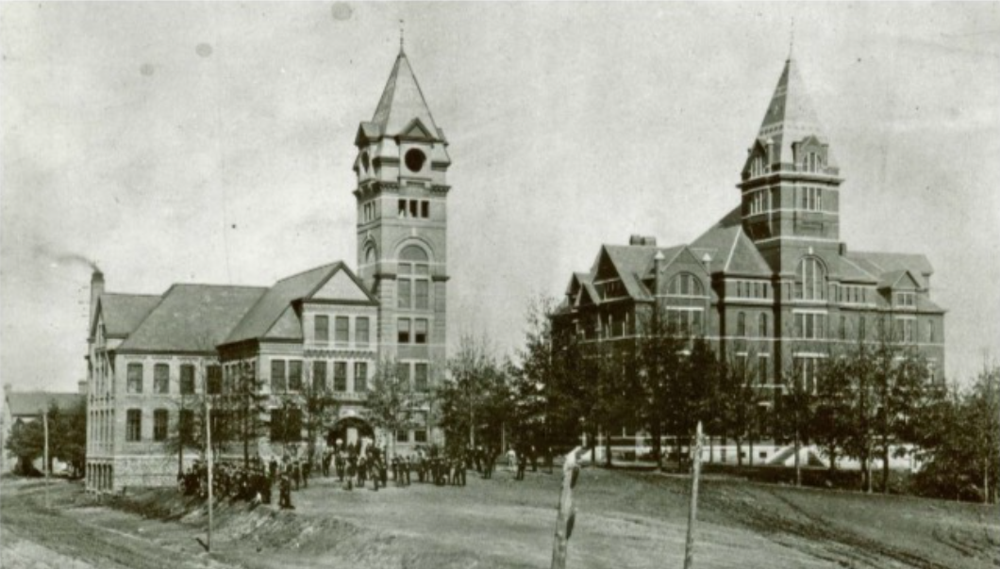

The story behind the map
When Georgia Tech was first established in 1888, the entire school was made up of two buildings on a single block near the corner of North Avenue. Today the campus holds more than two hundred buildings and reaches all the way from Home Park all the way across the Downtown connector, into Midtown.
We usually tell Georgia Tech's history through its people, traditions, and programs. This approach is natural, as Georgia Tech’s history is full of larger than life figures, like John Heisman and G. Wayne Clough, and traditions dating back well over 100 years, like Clean, Old Fashoned Hate. Our story takes a different approach: we are looking at the places instead: the classrooms, dining halls, libraries, and dorms where that history happened. Using archival maps, plans, and photographs from Georgia Tech's Archives and Special Collections, we follow how individual buildings were built, renovated, and reimagined, and ask who each change was for.
You’re probably familiar with these buildings in their current state, but if you want to learn more about their history and the expansion of Georgia Tech’s campus, explore the map below and click on any buildings you want to learn about.
Buildings outlined in gold are part of the story. Hover to preview, click to read its history.